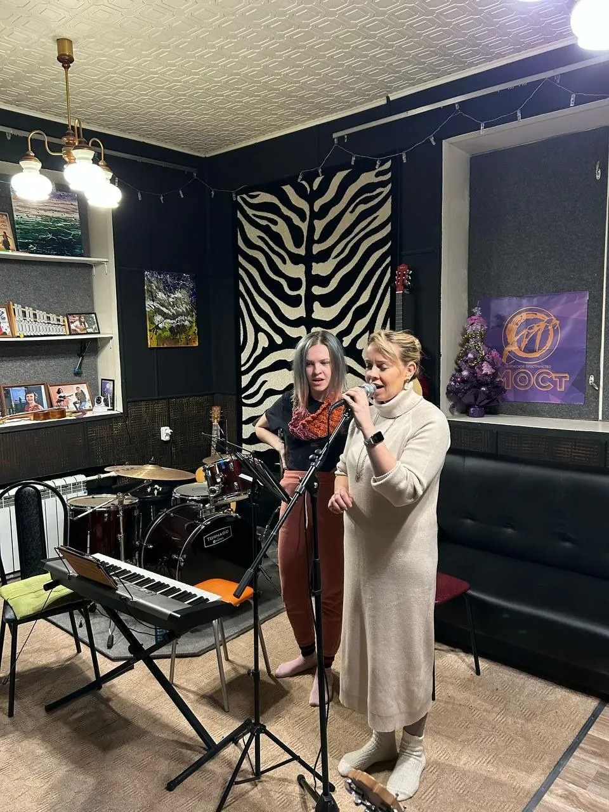
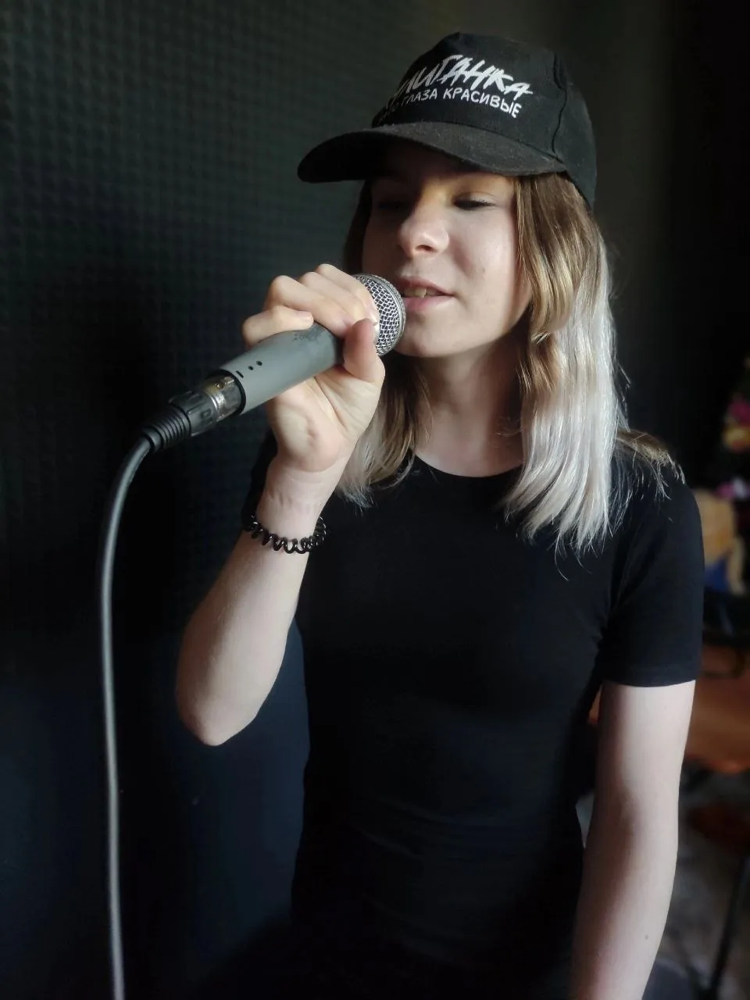
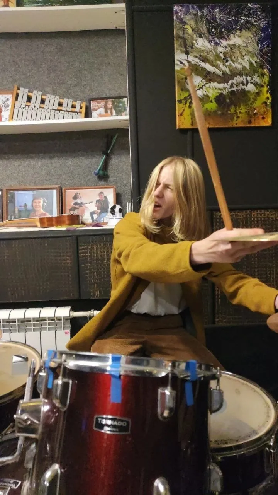
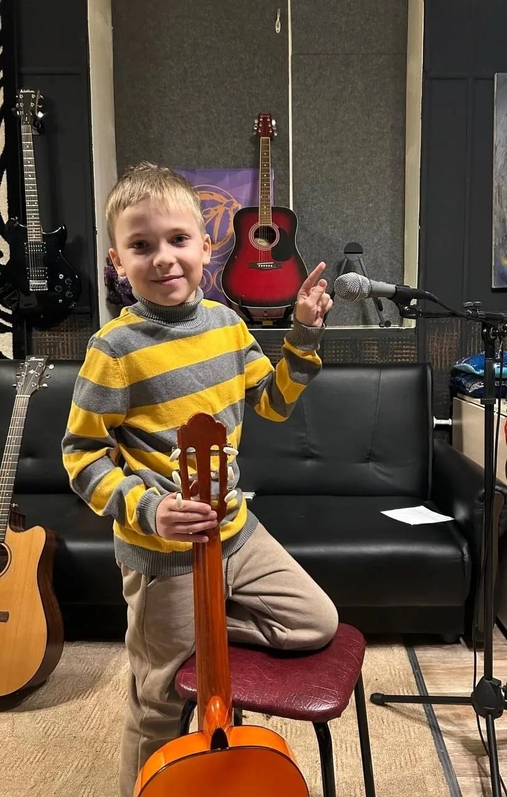
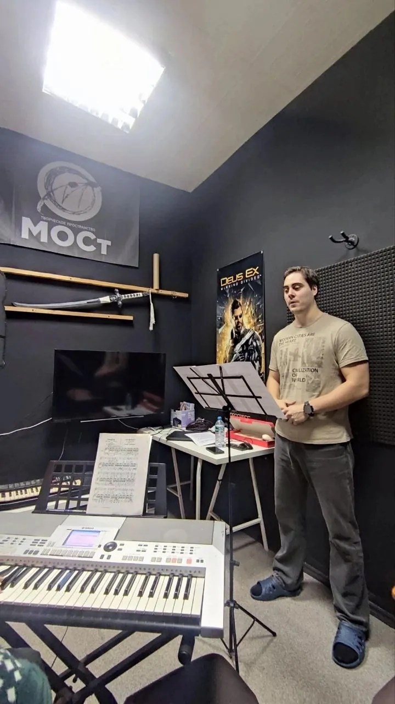
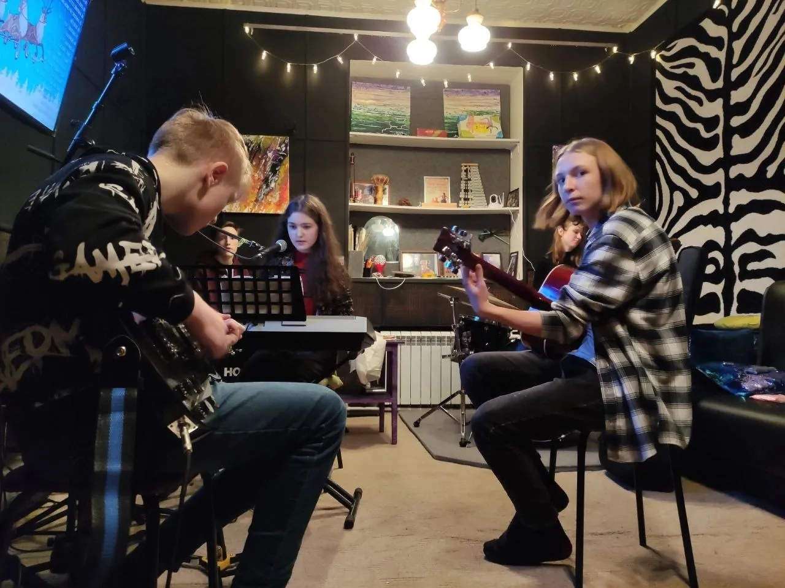
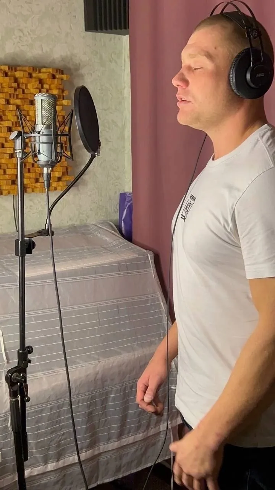
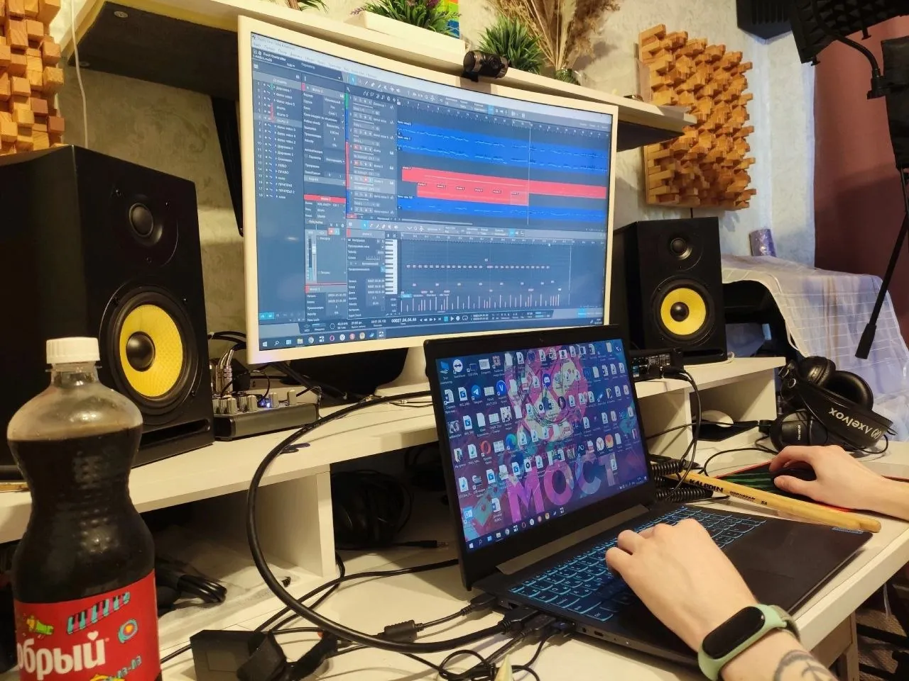
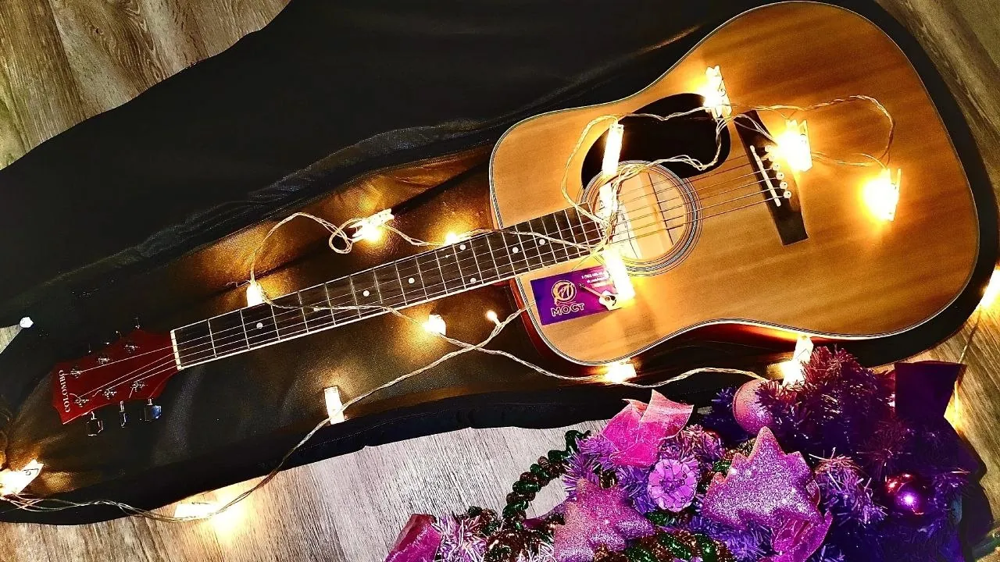

Вокал
- эстрадный
- рок
- академический
Музыкальная студия МОСТ: вокал, гитара, ударные и фортепиано для взрослых, подростков и детей от 8 лет. Знакомство с педагогом и первый урок — в подарок.
Хочу на пробноеДля взрослых, подростков и детей от 8 лет — очно и онлайн

ул. Рыбинская 44Б, 2 этажВ личку Станции Мост или по телефону 8 (960) 535-68-41
Расскажите, чему хотите научиться, и выберите направление. Это бесплатно.
Приходите без своего инструмента: гитары, установка и клавиши ждут в классе.
В студии на Рыбинской или из дома — формат выбираете вы.
Занятия у нас — это интересно и весело. И отличный способ психологической разгрузки.






Вокал, гитару, ударные и фортепиано ведут практикующие музыканты.
Можно начать без своего инструмента — всё необходимое есть в студии.
Приходите на Рыбинскую или занимайтесь из дома.
Принимаем взрослых, подростков и детей.
Звукозапись VOSTORG records, аранжировки, курсы и репетиционные базы — всё в одном месте.
Запишите вокал и инструменты в нашей студии звукозаписи — от первого демо до готовой песни.
Записаться на студиюПринесите песню — хоть под гитару, хоть на диктофон. Разработаем аранжировку под ваш замысел.
Обсудить аранжировку
Научитесь записывать и обрабатывать звук на настоящей студийной технике.
Узнать о курсеБарабанная установка, клавиши, гитары и микрофоны уже на месте — приходите группой и играйте.
Забронировать репетициюНачните с бесплатного знакомства — а дальше решите, ваше ли это.
0 ₽
Знакомство с педагогом и первый урок — в подарок.
Хочу на пробноеЧто входит:
900 ₽
Вокал, гитара, ударные или фортепиано для взрослых, подростков и детей от 8 лет.
ЗаписатьсяЧто входит:
от 2900 ₽
Звукозапись, аранжировки, курсы по звукорежиссуре и репетиционные базы.
Обсудить проектДля музыкантов:

Сертификаты на обучение всегда в продаже. Порадуйте того, кто давно хотел попробовать.
Не нашли ответ? Позвоните: 8 (960) 535-68-41
Ждём вас! Напишите в личку Станции Мост «Хочу на пробное» или позвоните — знакомство с педагогом и первый урок в подарок.